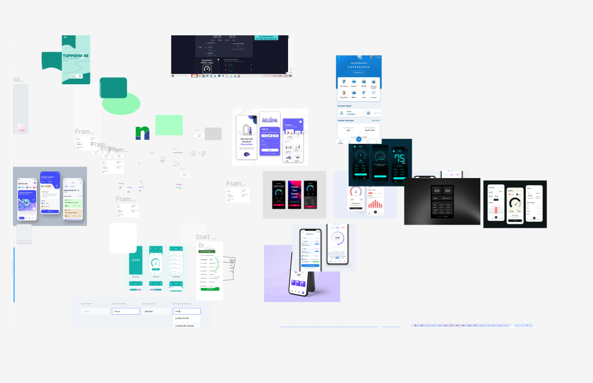
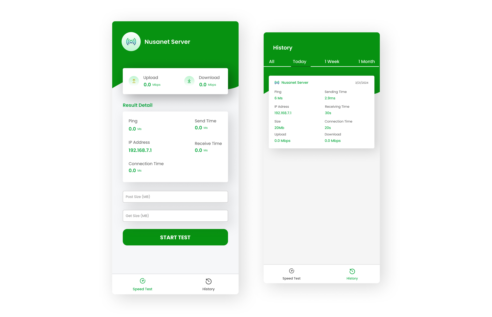

This application will be used by PT Media Antar Nusa to identify which of their servers are slower when using specific providers. The application interface will display various information about the servers, including ping, IP address, sending time, receiving time, and connection time. Currently, the application is still in the development stage.
PT Media Antar Nusa requires an application to assess the speed of their servers due to complaints regarding the sluggish performance of PT Media Antar Nusa's servers.
For this project, I've been granted the opportunity by the VP of Technical to independently craft the design of this mobile application, assuming the role of a product designer.
In the initial stages, I discussed with the VP Technical about the problems to be addressed with the existence of this application and the information to be displayed on the application page.
Next, in the second stage, I sought inspiration from the internet regarding similar applications.
Then, finally, after gathering information and inspiration, I created the final design for this speed tester application.
